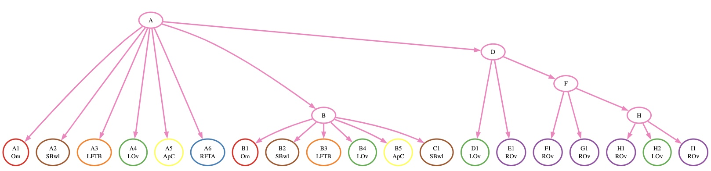
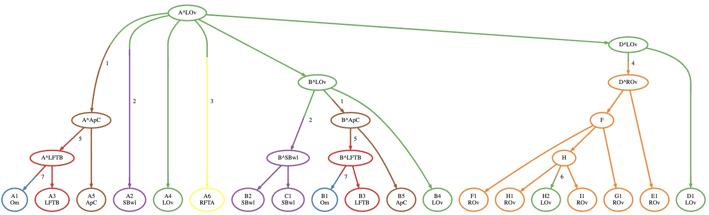
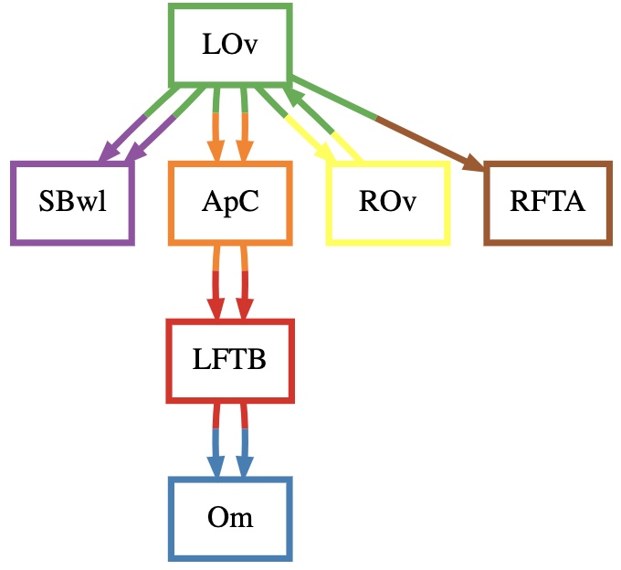

Quick Start
NOTE: This tutorial is better followed on a Jupyter Notebook. To use a Jupyter notebook, be sure to install MACH2 for Jupyter Notebook.
Now that you have MACH2 and MACH2-Viz set up, you can run the following on this example dataset.
Input Description
patient1.tree is the edgelist of the clone phylogeny to be labeled by MACH2, and patient1.labeling is a labeling of extant nodes (otherwise known as the leaves of the phylogeny) designating an anatomical location for these clones. As you can see, these are in tsv format, as columns can be separated by tabs or spaces.
Visualizing the Tree
We visualize the tree through the following lines of Python code:
In[1]:
Out[1]:

Computing a Full Labeling
NOTE: Computing a full labeling using MACH2 requires an ILP solver such as Gurobi, make sure to have it installed.
To solve the PMH-TR (Parsimonious Migration History with Tree Resolution) problem, you can run the following code:
In[2]:
Out[2]:
Set parameter MIPGap to value 0
Set parameter PoolSolutions to value 30
Set parameter PoolSearchMode to value 2
Set parameter Threads to value 30
Visualizing Solutions
You can visualize solutions using class methods in MACH2's library. Let's visualize the first solution returned by MACH2:
Visualizing the Clone Tree
In[3]
Out[3]

Visualizing the Migration Graph
In[4]
Out[4]

Opening MACH2-Viz
MACH2-Viz can be opened directly from the Jupyter Notebook via localhost through the following code
In[5]
A browser window should open and display an interactive visualization of the solution space.